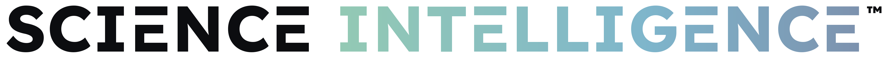

We deploy AI to do in months what the industry does in years.
AI-powered literature reviews and claim development that uncover what your science genuinely supports — across your category, ingredient, mechanism, and competitors. This is where we find the proof: the same rigor and depth a research team would deliver, at a fraction of the time and cost.
How It Works
From a brief to claims your reviewers can approve.
Swipe through the five stages of a Science Intelligence™ pass.
Illustrative example · fictional product
The old way takes years. Ours takes months.
The traditional way
- Run clinical studiesOne to three years and millions of dollars.
- Conduct a manual lit reviewIt clogs up R&D and costs ~$500K in salaries.
- Outsource to a consultancyAnd it still takes six-plus months.
How Let There Be solves it
- AI-assisted literature reviewExplores all the science about your category, ingredient, symptom, or competitor.
- Pre-compliant claim extractionBuilt against industry, governmental, and your own MLR preferences.
- Same depth of evidenceDelivered in months, for a fraction of the cost.
The Capability
Three ways we establish what your science supports.
Lit Review™
An AI-assisted review of everything the science already says — mechanisms, white space, misconceptions, and where your brand can credibly win.
Explore Lit Review™ →Claim Dev™
We extract pre-compliant claims from the evidence — checked against industry, governmental, and your own medical, legal, and regulatory preferences.
Explore Claim Dev™ →Science Index™
Your verified evidence published as articles and FAQs, structured so search engines and AI assistants can find, read and cite it.
Explore Science Index™ →For brands that always need an edge.
In a crowded category, the next advantage is a moving target — a new claim, a competitor's stumble, a fresh piece of science. Claims Lab™ is a flexible, premium retainer that keeps Lit Reviews, Claim Dev, and consumer testing running on the threads that matter — so you always have go-ready claims your competitors don't. Built for brands in competitive markets that can't afford to miss the next great claim.
Explore Claims Lab™ →FAQ
Science Intelligence — common questions
What is Science Intelligence?
It's the proof stage of the Science Marketing Engine — AI-powered literature reviews and claim development that establish what your science genuinely supports and what you're allowed to say, before any creative begins.
What does it include?
Lit Review™ (the evidence map) and Claim Dev™ (the pre-compliant claims pulled from that evidence). Claims Lab™ is a separate, ongoing retainer you can add to keep that work running between projects.
Why is it faster and cheaper than the traditional route?
A new clinical study runs $1M+ over one to three years; a manual literature review runs ~$500K over six-plus months. Our AI-assisted process reaches the same depth of evidence in months, for under $100K.
Where does Science Intelligence fit?
It's the first stage of the Science Marketing Engine — most brands start here, then carry the proof into Science Story™ and Science Studio. It's the foundation everything else is built on.
Does our science and data stay private?
Yes. All AI-assisted research runs in an enterprise-only environment, audited to bank- and healthcare-grade standards, and your data is contractually excluded from AI model training. Your science stays yours.
Discover your next scientific breakthrough.
Start with Science Intelligence — and discover what you can credibly say, in months rather than years.
Start with Science Intelligence